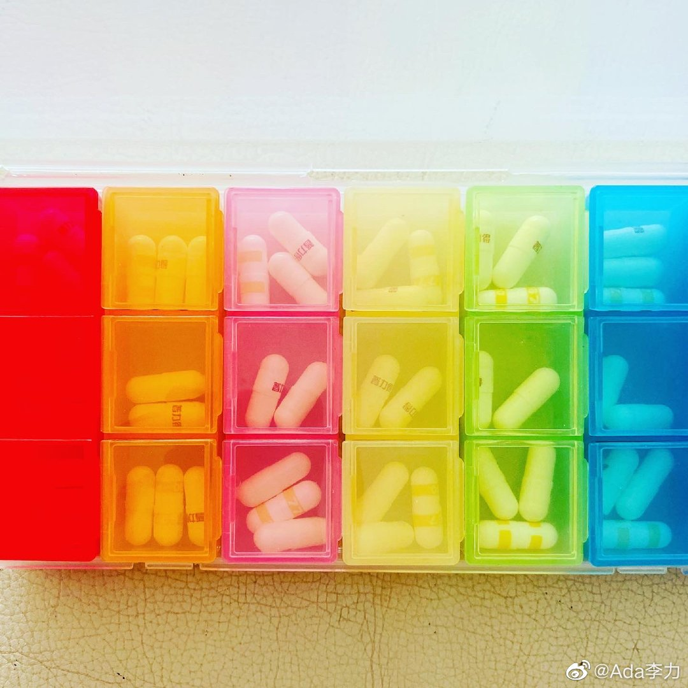

@Ada李力:
#一个人的企业#
翻译技术的发展，似乎让学习外语变得没那么重要，尤其是在非实时交流的情况下。
我以前认为Google翻译就足够好了，但看了几个人都推荐DeepL, 于是比较了下中译英，貌似DeepL更地道些。不知道有没有这方面专业人士能做个分析和比较，哪种翻译，算是好的翻译？
中文原文：
这是我平时吃的药片分装盒，一周七天，每天三次，共21个小盒子。 今天发现，它用来装螺丝钉这些小工具也挺方便的，而且，还好看。
Google翻译:
This is the pill box that I usually eat, three times a day, seven days a week, a total of 21 small boxes. Today, I found that it is very convenient to install small tools such as screws, and it looks good.
DeepL翻译:
This is my usual pill splitting box, seven days a week, three times a day, for a total of 21 small boxes. I found today that it's pretty handy for holding screws and other small tools, and, well, it's pretty.
翻译技术的发展，似乎让学习外语变得没那么重要，尤其是在非实时交流的情况下。
我以前认为Google翻译就足够好了，但看了几个人都推荐DeepL, 于是比较了下中译英，貌似DeepL更地道些。不知道有没有这方面专业人士能做个分析和比较，哪种翻译，算是好的翻译？
中文原文：
这是我平时吃的药片分装盒，一周七天，每天三次，共21个小盒子。 今天发现，它用来装螺丝钉这些小工具也挺方便的，而且，还好看。
Google翻译:
This is the pill box that I usually eat, three times a day, seven days a week, a total of 21 small boxes. Today, I found that it is very convenient to install small tools such as screws, and it looks good.
DeepL翻译:
This is my usual pill splitting box, seven days a week, three times a day, for a total of 21 small boxes. I found today that it's pretty handy for holding screws and other small tools, and, well, it's pretty.
- 